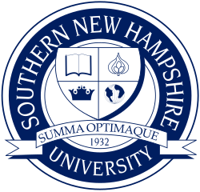

Operations leadership
Standing up the systems, processes, and accountability that let a mission-driven team actually deliver — without breaking under audit, scale, or staff turnover.
Chief Operating Officer at iT1 Nucleos, where I help run a learning platform that delivers real education and second-chance opportunities to people the system usually overlooks. Marine veteran. Operations leader. Lifelong problem solver.

I’m the Chief Operating Officer at Nucleos, where we promote a more just society through education and training. Our platform securely delivers high-quality e-learning to hard-to-reach learners — including the people most often shut out of the digital world: those involved with the justice system.
Day to day, I work with our clients to implement complete digital education infrastructure inside their facilities — integrating with existing programs, partner content, identity, and reporting. I leverage technical skills and a problem-solving instinct to keep the platform running smoothly and to translate operational chaos into something teams can actually use.
Before Nucleos, I led operations at Inspectify and ran project management for Plywood Supply. Before all of that, I served in the United States Marine Corps — an experience that shapes how I lead, how I show up, and what I think work owes the world.
I gravitate toward work where the outcomes actually matter — learners getting credentials, agencies meeting compliance, families seeing the people they love come home with something to build on.
Standing up the systems, processes, and accountability that let a mission-driven team actually deliver — without breaking under audit, scale, or staff turnover.
Implementing complete digital education infrastructure inside correctional facilities — identity, content, tablets, reporting — with the security posture the public sector demands.
Helping people earn the credentials, skills, and career pathways that change what comes after release — through partnerships with content providers, agencies, and employers.
Turning operational data — learner records, partner usage, throughput, security signals — into the answers leadership and partners actually need to make decisions.
Lead operations for the platform that securely delivers e-learning to hard-to-reach learners — including those involved with the justice system. Partner with clients to implement complete digital education infrastructure inside their facilities, integrating with existing programs, content partners, and reporting systems. Drive operational reliability, security posture, and the day-to-day execution behind a public-benefit mission.
Built the operations function supporting Nucleos’ mission to promote a more just society through education and training. Helped expand access to education and vocational opportunities for people involved with the justice system — the company’s first customer segment for AI-powered education and career-pathways tooling.
Ran operations for a venture-backed property inspection marketplace — coordinating inspectors, clients, and internal teams to keep the pipeline moving while the company scaled.
Coordinated projects across a high-volume building-materials supplier — learning how operations actually run when the margins are tight and the customers are on a job-site clock.
The discipline, accountability, and bias for action that shape everything I’ve built since.
Five Professional Certificates, an AWS specialization, and dozens of standalone courses from Harvard, Google, Meta, Johns Hopkins, and more — built up alongside the COO role.
Professional Certificate · 8-course program
Professional Certificate · 8-course program
Professional Certificate · Specialization
Professional Certificate · 5-course program
Specialization · 4-course program
I’m always open to conversations about operations, ed-tech, public-sector technology, and second-chance work. If any of that overlaps with what you’re doing — reach out.